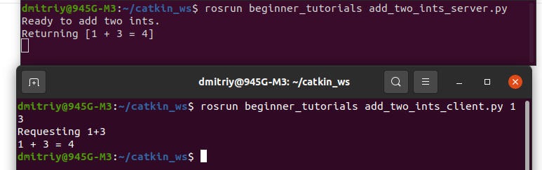

Редактируем CMakeLists.txt, добавляем эти строки:
add_executable(talker src/talker.cpp)
target_link_libraries(talker ${catkin_LIBRARIES})
add_dependencies(talker beginner_tutorials_generate_messages_cpp)
add_executable(listener src/listener.cpp)
target_link_libraries(listener ${catkin_LIBRARIES})
add_dependencies(listener beginner_tutorials_generate_messages_cpp)
Это создаст два исполняемых файла, talker и listener, которые по умолчанию будут помещены в каталог пакетов вашего пространства разработки, расположенный по умолчанию по адресу ~/catkin_ws/devel/lib/<package name>.
Строка из CMakeLists.txt: add_dependencies(talker beginner_tutorials_generate_messages_cpp) гарантирует, что заголовки сообщений (Headers) этого пакета будут сгенерированы перед использованием. Если вы используете сообщения из других пакетов в своем рабочем пространстве catkin, вам также необходимо добавить зависимости к их соответствующим целям генерации, поскольку catkin создает все проекты параллельно. Начиная с *Groovy*, вы можете использовать следующую переменную для определения всех необходимых целей:
target_link_libraries(talker ${catkin_LIBRARIES})
Переформируем наши пакеты настройки:
cd ~/catkin_ws
catkin_make
Написание простых Publisher and Subscriber на Python
Создадим узел (ноду) publisher ("talker"), который будет постоянно транслировать сообщение.
- roscd beginner_tutorials
Создадим папку scripts, которая будет хранить файлы.py
mkdir scripts
В эту папку скачаем готовый talker.py из гитхаба:
wget https://raw.github.com/ros/ros_tutorials/kinetic-devel/rospy_tutorials/001_talker_listener/talker.py
Сделаем его исполняемым:
chmod +x talker.py

Код talker.py:

Разъяснение кода:
- #!/usr/bin/env python с этой строки начинается каждая нода (скрипт) на python.

Вам необходимо импортировать rospy, если вы пишете ROS-узел. Импорт std_msgs.msg необходим для того, чтобы мы могли повторно использовать тип сообщения std_msgs/String (простой строковый контейнер) для публикации.
Этот раздел кода определяет интерфейс talker для остальной части ROS. pub = rospy.Издатель("chatter", String, queue_size=10) объявляет, что ваш узел публикует в топике chatter, используя тип сообщения String. String здесь на самом деле является классом std_msgs.msg.String. Аргумент queue_size является новым в ROS hydro и ограничивает количество сообщений в очереди, если какой-либо подписчик не получает их достаточно быстро. В старых дистрибутивах ROS этот аргумент просто не используется.
Следующая строка, rospy.init_node(NAME, ...), очень важна, поскольку она сообщает rospy имя вашего узла - пока у rospy не будет этой информации, он не сможет начать взаимодействие с мастером ROS. В этом случае ваш узел получит имя talker. ПРИМЕЧАНИЕ: имя должно быть базовым, т.е. оно не должно содержать никаких косых черт "/".
anonymous = True гарантирует, что ваш узел будет иметь уникальное имя, добавляя случайные числа в конец имени. Обратитесь к разделу Инициализация и завершение работы - Инициализация вашего узла ROS в документации rospy для получения дополнительной информации о параметрах инициализации узла.

Эта строка создает объект Rate rate. С помощью своего метода sleep() он предлагает удобный способ зацикливания с желаемой скоростью. С его аргументом 10 мы должны ожидать, что цикл будет выполняться 10 раз в секунду (до тех пор, пока наше время обработки не превысит 1/10 секунды!).

Этот цикл представляет собой довольно стандартную конструкцию rospy: проверка флага rospy.is_shutdown() и последующее выполнение работы. Вы должны проверить is_shutdown(), чтобы проверить, должна ли ваша программа завершаться (например, при наличии комбинации клавиш Ctrl-C или иным образом). В данном случае "работа" - это вызов pub.publish(hello_str), который публикует строку в нашей теме chatter. Цикл вызывает функцию rate.sleep(), которая находится в режиме ожидания, достаточном для поддержания желаемой скорости в цикле.
(Вы также можете столкнуться с функцией rospy.sleep(), которая похожа на функцию time.sleep(), за исключением того, что она также работает с имитируемым временем (см. Часы).)
Этот цикл также вызывает rospy.loginfo(str), который выполняет тройную функцию: сообщения выводятся на экран, записываются в файл журнала узла и записываются в rosout. rosout - это удобный инструмент для отладки: вы можете извлекать сообщения с помощью rqt_console вместо того, чтобы искать окно консоли с выводом вашего узла.
std_msgs.msg.String - это очень простой тип сообщения, поэтому вам может быть интересно, как выглядит публикация более сложных типов. Общее правило заключается в том, что аргументы конструктора располагаются в том же порядке, что и в файле .msg. Вы также можете не вводить никаких аргументов и инициализировать поля напрямую, например:
msg = String()
msg.data = str
или же вы можете инициализировать некоторые поля, а для остальных оставить значения по умолчанию:
String(data=str)
В дополнение к стандартной проверке Python __main__check, при этом обнаруживается ошибка rospy.Исключение ROSInterruptException, которое может быть вызвано методами rospy.sleep() и rospy.Rate.sleep() при нажатии Ctrl-C или при выключении вашего узла иным образом. Причина, по которой возникает это исключение, заключается в том, что вы случайно не продолжаете выполнение кода после sleep().
- В CMakeLists.txt добавить строки:
catkin_install_python(PROGRAMS scripts/talker.py
DESTINATION ${CATKIN_PACKAGE_BIN_DESTINATION}
)
Написание ноды subscriber
-
- roscd beginner_tutorials/scripts/
- wget https://raw.github.com/ros/ros_tutorials/kinetic-devel/rospy_tutorials/001_talker_listener/listener.py
- chmod +x listener.py

Код:

В CMakeLists.txt добавляем строки:
catkin_install_python(PROGRAMS scripts/talker.py scripts/listener.py
DESTINATION ${CATKIN_PACKAGE_BIN_DESTINATION}
)

Это означает, что ваш узел подписан на тему chatter, которая имеет тип std_msgs.msgs.Строка. При получении новых сообщений вызывается обратный вызов с этим сообщением в качестве первого аргумента.
Мы также немного изменили вызов rospy.init_node(). Мы добавили аргумент ключевого слова anonymous=True. ROS требует, чтобы у каждого узла было уникальное имя. Если появляется узел с таким же именем, он повторяет предыдущий. Это значит, что неисправные узлы могут легко быть выкинут из сети. Анонимные=флаг True рассказывает rospy чтобы создать уникальное имя для узла, так что вы можете иметь несколько узлов listener.py легко работать.
Последнее дополнение: функция rospy.spin() просто не позволяет вашему узлу завершать работу до тех пор, пока он не будет выключен. В отличие от roscpp, функция rospy.spin() не влияет на функции обратного вызова абонента, поскольку у них есть свои собственные потоки.
- Мы используем CMake в качестве нашей системы сборки, и, да, вы должны использовать ее даже для узлов Python. Это необходимо для того, чтобы убедиться, что автоматически сгенерированный код Python для сообщений и служб создан.
Перейдите в свое рабочее пространство catkin и запустите catkin_make:
cd ~/catkin_ws
catkin_make
Первой командой вызовем мастера:
roscore
Еесли вы используете catkin, убедитесь, что у вас есть исходный код для вашего рабочего пространства setup.sh файл после вызова catkin_make, но перед выполнением нашего публишера:
cd ~/catkin_ws
source ./devel/setup.bash
Выполним нашего созданного публишера на python:
rosrun beginner_tutorials talker.py
или rosrun beginner_tutorials talker (C++)
Работает:
 rosrun beginner_tutorials listener.py или rosrun beginner_tutorials listener на языке C++
rosrun beginner_tutorials listener.py или rosrun beginner_tutorials listener на языке C++
Работает.
Здесь мы создадим узел service ("add_two_ints_server"), который будет получать два целых числа и возвращать сумму.
Сначало перейдём в каталог пакета, где будут наши службы:
roscd beginner_tutorials
Пожалуйста, убедитесь, что вы следовали инструкциям из предыдущего руководства по созданию сервиса, необходимого в этом руководстве, создав AddTwoInts.srv
Создаём файл src/add_two_ints_server.cpp:
nano src/add_two_ints_server.cpp
Код:
#include "ros/ros.h"
#include "beginner_tutorials/AddTwoInts.h"
bool add(beginner_tutorials::AddTwoInts::Request &req,
beginner_tutorials::AddTwoInts::Response &res)
{
res.sum = req.a + req.b;
ROS_INFO("request: x=%ld, y=%ld", (long int)req.a, (long int)req.b);
ROS_INFO("sending back response: [%ld]", (long int)res.sum);
return true;
}
int main(int argc, char **argv)
{
ros::init(argc, argv, "add_two_ints_server");
ros::NodeHandle n;
ros::ServiceServer service = n.advertiseService("add_two_ints", add);
ROS_INFO("Ready to add two ints.");
ros::spin();
return 0;
}
Разбор кода:
-
#include "ros/ros.h"
#include "beginner_tutorials/AddTwoInts.h"
beginner_tutorials/AddTwoInts.h - это заголовочный файл, созданный на основе файла srv, который мы создали ранее.
-
bool add(beginner_tutorials::AddTwoInts::Request &req,
beginner_tutorials::AddTwoInts::Response &res)
Эта функция предоставляет услугу добавления двух целых чисел, она принимает тип запроса и ответа, определенный в файле srv, и возвращает логическое значение.
-
{
res.sum = req.a + req.b;
ROS_INFO("request: x=%ld, y=%ld", (long int)req.a, (long int)req.b);
ROS_INFO("sending back response: [%ld]", (long int)res.sum);
return true;
}
Здесь два целых числа добавляются и сохраняются в ответе. Затем регистрируется некоторая информация о запросе и ответе. Наконец, по завершении работы служба возвращает значение true.
ros::ServiceServer service = n.advertiseService("add_two_ints", add);
Здесь сервис создается и объявляется через ROS.
Создание ноды клиента
Создаём файл клиента в каталоге пакета:
nano src/add_two_ints_client.cpp
Код:
#include "ros/ros.h"
#include "beginner_tutorials/AddTwoInts.h"
#include
int main(int argc, char **argv)
{
ros::init(argc, argv, "add_two_ints_client");
if (argc != 3)
{
ROS_INFO("usage: add_two_ints_client X Y");
return 1;
}
ros::NodeHandle n;
ros::ServiceClient client = n.serviceClient("add_two_ints");
beginner_tutorials::AddTwoInts srv;
srv.request.a = atoll(argv[1]);
srv.request.b = atoll(argv[2]);
if (client.call(srv))
{
ROS_INFO("Sum: %ld", (long int)srv.response.sum);
}
else
{
ROS_ERROR("Failed to call service add_two_ints");
return 1;
}
return 0;
}
Разбор:
- ros::ServiceClient client = n.serviceClient("add_two_ints");
Создается клиент для службы add_two_ints. Объект ros::ServiceClient используется для последующего вызова службы.
-
Создаем экземпляр автоматически сгенерированного класса service и присваиваем значения его элементу request. Класс service содержит два элемента, request и response. Он также содержит два определения класса, Request и Response.
- if (client.call(srv))
Фактически вызывает службу. Поскольку вызовы службы блокируются, функция вернется после завершения вызова. Если вызов службы завершился успешно, функция call() вернет значение true и значение в srv.response будет действительным. Если вызов не увенчался успехом, функция call() вернет значение false, а значение в srv.response будет недействительным.
Building сервисов
Выполнение нод сервиса и клиента
Сервер:
Вызов мастера:
roscore
В новом терминале запускаем сервер:
rosrun beginner_tutorials add_two_ints_server

Клиент:
В новом терминале:
rosrun beginner_tutorials add_two_ints_client 1 3

Создание простых сервера и клиента на python
Сервер:
roscd beginner_tutorials
nano scripts/add_two_ints_server.py
Код:
#!/usr/bin/env python
from __future__ import print_function
from beginner_tutorials.srv import AddTwoInts,AddTwoIntsResponse
import rospy
def handle_add_two_ints(req):
print("Returning [%s + %s = %s]"%(req.a, req.b, (req.a + req.b)))
return AddTwoIntsResponse(req.a + req.b)
def add_two_ints_server():
rospy.init_node('add_two_ints_server')
s = rospy.Service('add_two_ints', AddTwoInts, handle_add_two_ints)
print("Ready to add two ints.")
rospy.spin()
if __name__ == "__main__":
add_two_ints_server()
chmod +x scripts/add_two_ints_server.py
nano CMakeLists.txt
Добавляем строки:
catkin_install_python(PROGRAMS scripts/add_two_ints_server.py
DESTINATION ${CATKIN_PACKAGE_BIN_DESTINATION}
)
Строка s = rospy.Service('add_two_ints', AddTwoInts, handle_add_two_ints)
При этом объявляется новая служба с именем add_two_ints и типом службы AddTwoInts. Все запросы передаются в функцию handle_add_two_ints. функция handle_add_two_ints вызывается с экземплярами AddTwoIntsRequest и возвращает экземпляры AddTwoIntsResponse.
Как и в примере с подписчиком, функция rospy.spin() не позволяет вашему коду завершать работу до завершения работы службы.
Клиент:
nano scripts/add_two_ints_client.py
Код:
#!/usr/bin/env python
from __future__ import print_function
import sys
import rospy
from beginner_tutorials.srv import *
def add_two_ints_client(x, y):
rospy.wait_for_service('add_two_ints')
try:
add_two_ints = rospy.ServiceProxy('add_two_ints', AddTwoInts)
resp1 = add_two_ints(x, y)
return resp1.sum
except rospy.ServiceException as e:
print("Service call failed: %s"%e)
def usage():
return "%s [x y]"%sys.argv[0]
if __name__ == "__main__":
if len(sys.argv) == 3:
x = int(sys.argv[1])
y = int(sys.argv[2])
else:
print(usage())
sys.exit(1)
print("Requesting %s+%s"%(x, y))
print("%s + %s = %s"%(x, y, add_two_ints_client(x, y)))
chmod +x scripts/add_two_ints_client.py
Добавляем в CMakeLists.txt:
nano CMakeLists.txt
строки:
catkin_install_python(PROGRAMS scripts/add_two_ints_server.py scripts/add_two_ints_client.py
DESTINATION ${CATKIN_PACKAGE_BIN_DESTINATION}
)
Разбор кода:
Для клиентов вам не нужно вызывать init_node(). Сначала мы вызываем:
rospy.wait_for_service('add_two_ints')
Это удобный метод, который блокируется до тех пор, пока не будет доступна служба с именем add_two_ints.
Далее мы создаем дескриптор для вызова службы:
add_two_ints = rospy.ServiceProxy('add_two_ints', AddTwoInts)
Мы можем использовать этот дескриптор так же, как обычную функцию, и вызывать его:
resp1 = add_two_ints(x, y)
return resp1.sum
Поскольку мы указали тип сервиса как AddTwoInts, он выполняет работу по созданию объекта запроса AddTwoInts за вас (вместо этого вы можете ввести свой собственный). Возвращаемое значение - это объект ответа AddTwoInts. Если вызов завершается неудачей, может возникнуть ошибка rospy.ServiceException, поэтому вам следует настроить соответствующий блок try/except.
Building сервера и клиента
cd ~/catkin_ws
catkin_make
Выполнение сервера и клиента
Сервер:
roscore вызвали мастера
В другом терминале:
rosrun beginner_tutorials add_two_ints_server (C++)
или
rosrun beginner_tutorials add_two_ints_server.py (Python)
Клиент:
В другом клиенте:
rosrun beginner_tutorials add_two_ints_client 1 3 (C++)
или
rosrun beginner_tutorials add_two_ints_client.py 1 3 (Python)

Recording data (creating a bag file) Запись данных (создание bag файла)
В этом разделе руководства вы узнаете, как записывать данные по топикам из запущенной системы ROS. Данные по топикам будут накапливаться в файле bag.
Сначала выполните следующие команды в отдельных терминалах:
roscore - первый терминал
2 терминал - rosrun turtlesim turtlesim_node
3 терминал - rosrun turtlesim turtle_teleop_key
Это запустит два узла - визуализатор turtlesim и узел turtle_teleop_key, который позволяет управлять turtlesim с клавиатуры с помощью клавиш со стрелками на клавиатуре.
rostopic list -v - в 4 терминале, выведем список запущенных в данный момент топиков.
Список published (публикуемых) топиков - это единственные типы сообщений, которые потенциально могут быть занесены в файл журнала данных, поскольку в журнал записываются только публикуемые сообщения. Топик /turtle 1/cmd_vel - это командное сообщение, опубликованное teleop_turtle, которое принимается в качестве входных данных программой turtlesim. Сообщения /turtle1/color_sensor и /turtle1/pose являются выходными сообщениями, опубликованными turtlesim.
Теперь мы запишем публикуемые данные. Откройте новое окно терминала. В этом окне выполните следующие команды:
mkdir ~/bagfiles
cd ~/bagfiles
rosbag record -a

Создаем временный каталог для записи данных, а затем запускаем rosbag record с параметром -a, указывающим, что все публикуемые топики должны быть собраны в файле bag.
Примерно 10 секунд двигаем черепаху.
В окне, где запустили rosbag нажать Ctrl-C. Теперь изучите содержимое каталога ~/bagfiles. Должны увидеть файл с именем, которое начинается с года, даты и времени и суффикса .bag. Это файл пакета, содержащий все топики, опубликованные любым узлом за время работы rosbag record.
еперь, когда мы записали файл bag с помощью rosbag record, мы можем просмотреть его и воспроизвести с помощью команд rosbag info и rosbag play. Сначала мы посмотрим, что записано в файле bag. Мы можем выполнить команду info - эта команда проверяет содержимое файла bag без его воспроизведения. Выполните следующую команду из каталога файлов bag:
rosbag info <your bagfile>
Следующим шагом в этом руководстве будет воспроизведение файла bag, чтобы воспроизвести поведение в запущенной системе. Сначала завершите работу программы teleop, которая, возможно, все еще запущена из предыдущего раздела - нажмите Ctrl-C в терминале, где вы запустили turtle_teleop_key. Оставьте turtlesim запущенным. В окне терминала запустите следующую команду в каталоге, из которого смотрели инфо о бэгфайле:
rosbag play <your bagfile>

В режиме по умолчанию rosbag play будет ждать в течение определенного периода времени (0,2 секунды) после объявления каждого сообщения, прежде чем начнет публиковать содержимое файла пакета. Некоторое время ожидания позволяет любому подписчику сообщения получать уведомления о том, что сообщение было объявлено и что за ним могут последовать другие сообщения. Если rosbag play публикует сообщения сразу после публикации рекламы, подписчики могут не получить первые несколько опубликованных сообщений. Период ожидания можно указать с помощью параметра -d.
В конечном итоге тема /turtle 1/cmd_vel будет опубликована, и черепаха должна начать перемещаться в turtlesim по схеме, аналогичной той, которую вы выполнили из программы teleop. Время между запуском rosbag play и перемещением черепашки должно быть примерно равно времени между запуском оригинальной записи rosbag и вводом команд с клавиатуры в начальной части руководства. Вы можете сделать так, чтобы воспроизведение rosbag не начиналось с начала файла bag, а начиналось на некоторое время позже начала, используя аргумент -s. Последним параметром, который может представлять интерес, является параметр -r, который позволяет вам изменять скорость публикации на определенный коэффициент. Если вы выполните:
rosbag play -r 2 <your bagfile>
вы должны увидеть, как черепаха совершает несколько иную траекторию - это траектория, которая получилась бы, если бы вы вводили команды с клавиатуры в два раза быстрее.
Запись подмножества данных
При запуске сложной системы, такой как программный комплекс pr2, могут публиковаться сотни разделов, а в некоторых разделах, таких как потоки изображений с камер, потенциально публикуются огромные объемы данных. В такой системе часто нецелесообразно записывать лог-файлы, содержащие все темы, на диск в виде одного файла bag. Команда rosbag record поддерживает запись только определенных тем в файл bag, позволяя пользователям записывать только те темы, которые их интересуют.
Если какие-либо узлы turtlesim запущены, закройте их и перезапустите файл запуска keyboard teleop:
rosrun turtlesim turtlesim_node
rosrun turtlesim turtle_teleop_key
В вашем каталоге bagfiles выполните следующую команду:
rosbag record -O subset /turtle1/cmd_vel /turtle1/pose

Аргумент -O указывает rosbag record на доступ к файлу с именем subset.bag, а аргументы topic указывают на то, что rosbag record подписывается только на эти две темы. Перемещайте черепашку в течение нескольких секунд, используя команды со стрелками на клавиатуре, а затем нажмите Ctrl-C на записи rosbag.
Теперь проверьте содержимое файла bag (rosbag info subset.bag). Вы должны увидеть что-то вроде этого, только с указанными темами: rosbag info subset.bag
Чтение сообщений из bag файла
Ссылки: ROS на Raspberry Pi: Использование rosbag для сохранения данных топиков
Reading messages from a bag file
Предполагая, что вы используете систему с уже запущенным ROS, вот быстрая команда для записи 30-секундного фрагмента данных в файл пакета только для интересующих вас тем, например: /topic1, /topic2 и /topic3. Поскольку мы устанавливаем продолжительность в 30 секунд, по истечении этого времени запись автоматически остановится:
rosbag record --duration=30 --output-name=/tmp/mybagfile.bag \
/topic1 /topic2 /topic3
Остальная часть этого руководства будет выполнена при условии, что скачали с помощью команды:
wget https://open-source-webviz-ui.s3.amazonaws.com/demo.bag
У меня не удаётся скачать, выдаёт ошибку 403
У вас будет два варианта чтения/извлечения сообщений из файла bag.
Обратите внимание, что в любой из приведенных ниже команд команда time добавляется перед началом просто потому, что она выводит время выполнения каждой команды, а поскольку иногда эти команды могут занимать много времени, полезно использовать команду time, чтобы получить представление о том, сколько времени должна занять данная команда. Если вы не хотите его использовать, вы можете удалить временную часть любой из приведенных ниже команд.
Вариант 1: немедленно воспроизвести сообщения и просмотреть выходные данные на нескольких терминалах.
Вам нужно знать точные названия тем, которые вы хотели бы прочитать в файле bag. Итак, давайте посмотрим, что находится в файле bag. В любом терминале вручную проверьте все опубликованные темы и количество сообщений, опубликованных в каждой теме, с помощью этой команды:
time rosbag info /tmp/mybagfile.bag
или если знаете имена нужных топиков:
time rosbag info /tmp/mybagfile.bag | grep -E "(topic1|topic2|topic3)"

Вариант 2: используем скрипт ros_readbagfile, чтобы извлечь интересующие темы
Установка команды ros_readbagfile:
- Скачал wget https://raw.githubusercontent.com/ElectricRCAircraftGuy/eRCaGuy_dotfiles/master/useful_scripts/ros_readbagfile.py
- Выполнил: chmod +x ros_readbagfile.py
- Убедититься, что есть каталог ~/bin для личных двоичных файлов: mkdir -p ~/bin
- Переместить этот файл в ~/bin: mv ros_readbagfile.py ~/bin/ros_readbagfile
- Переустановите свой файл ~/.profile, чтобы убедиться, что ~/bin находится на вашем пути и вы можете использовать эту новую команду `ros_readbag file`, которую вы только что установили.
Команда: . ~/.profile
Выполнил.
- Установка python-зависимостей:
sudo apt install python3-rosbag
ln -si "${PWD}/ros_readbagfile.py" ~/bin/gs_ros_readbagfile
ln -si "${PWD}/ros_readbagfile.py" ~/bin/ros_readbagfile
. ~/.profile
Теперь можем выполнять команды: `gs_ros_readbagfile` или `ros_readbagfile`
Примечание: если ваш терминал по-прежнему сообщает, что не может найти команду при попытке ее запуска, возможно, вам потребуется убедиться, что ~/bin является частью вашей переменной PATH.
Работа с командой ros_readbagfile.py:
Использовать команду буду на bag.файле /home/dmitriy/bagfiles/2024-07-21-19-21-13.bag
- Определим точные имена тем, которые вы хотели бы прочитать в файле bag:
time rosbag info 2024-07-21-19-21-13.bag

- Общий синтаксис команды readbagfile:
time ros_readbagfile <mybagfile.bag> [topic1] [topic2] [topic3] [...]
Выведу только 1 топик /turtle1/cmd_vel:
time ros_readbagfile 2024-07-21-19-21-13.bag /turtle1/cmd_vel

- Запишем сообщения 2024-07-21-19-21-13.bag /turtle1/cmd_vel в файл topics.yaml без вывода в терминал:
time ros_readbagfile <mybagfile.bag> [topic1] [topic2] [topic3] [...] > topics.yaml

Если хотим одновременно записывать в файл и выводить на экран, то использовать команду такого формата:
time ros_readbagfile <mybagfile.bag> [topic1] [topic2] [topic3] [...] | tee topics.yaml
При желании, чтобы увидеть "прогресс", наблюдая, как увеличивается размер файла yaml, в новом терминале запустить команду:
watch -n 1 'du -sk topics.yaml | awk '\''{printf "%.3f MiB %s\n", $1/1024, $2}'\'''
Теперь просмотрите topics.yaml в вашем предпочтительном текстовом редакторе, чтобы просмотреть все сообщения, извлеченные из файла bag.
Анализ topics.yaml
Имеем файл topics.yaml, созданный на основе файла.bag. Теперь научимся извлекать из него нужную нам информацию.
Для начала установим: sudo apt update && sudo apt install ripgrep
Допустим хотим найти список всех ключевых элементов, которые начинаются с "piksi_". Вы можете сделать это, выполнив поиск по строке "ключ: "piksi_" следующим образом:
time rg 'key: "piksi_' topics.yaml | sort -V | awk '!seen[$0]++'
Часть rg 'key: "piksi_" topics.yaml выполняет поиск в текстовом файле "topics.yaml" строки : "piksi_",
часть sort -V сортирует все выходные строки,
а часть awk '!seen[$0]++" удаляет повторяющиеся записи, так что вы видите только одну строку каждого совпадения.
Другое применение:
Давайте выполним поиск по всем ключевым элементам данных, которые начинаются с "GPS", "Duration" или "Minimum". Поиск по регулярным выражениям типа "OR" выполняется в общем формате: (str1|str2|str3|и т.д.), где | в данном случае читается как "or". Итак, поиск "GPS", "Duration" или "Minimum" может быть выполнен с помощью следующей строки поиска по регулярному выражению:
'(key: "GPS|key: "Duration|key: "Minimum)'.
Команда: time rg '(key: "GPS|key: "Duration|key: "Minimum)' topics.yaml | sort -V | awk '!seen[$0]++'
Зачем использовать для этой цели "ros_readbag file" вместо `rostopic echo -b`?
- Потому что rostopic работает очень медленно! Например, выполнение этой команды на быстродействующем компьютере (4-ядерный/8-поточный Pentium i7 с SSD-накопителем m.2) занимает 11,5 минут для чтения файла bag объемом 18 ГБ!
Однако скрипту ros_readbagfile требуется всего 1 минута 37 секунд на том же компьютере, чтобы прочитать ту же тему из того же файла bag объемом 18 ГБ! Таким образом, ros_readbagfile работает в 11,5/(1+37/60) = ~в 7 раз быстрее!
- Потому что rostopic может одновременно читать только одну тему, в то время как ros_readbagfile может читать любое количество тем одновременно!